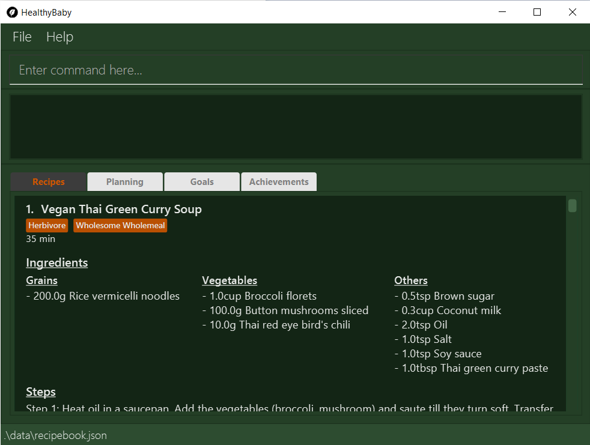

By: Team HYBB Since: Mar 2020 Licence: MIT
- 1. Introduction
- 2. Overview
- 3. Quick Start
- 4. The Anatomy of a Recipe
- 5. Notations Used
- 6. Basic Commands
- 6.1. Viewing help :
help - 6.2. Switch the current tab:
switch - 6.3. List all recipes:
list - 6.4. Find a recipe:
find - 6.5. Add a recipe:
add - 6.6. Edit a recipe :
edit - 6.7. Delete a recipe :
delete - 6.8. Favourite a recipe:
favourite - 6.9. Unfavourite a recipe:
unfavourite - 6.10. Clear the recipe book :
clear - 6.11. Exit the program :
exit - 6.12. Saving the data
- 6.1. Viewing help :
- 7. Recipe Customisation Commands
- 8. Filter Command
- 9. Planning Command
- 9.1. Plan a recipe:
plan - 9.2. Delete a planned recipe:
deletePlan - 9.3. Clear all planned recipes:
clearPlan - 9.4. Mark a planned recipe as done:
done[Coming in v1.4] - 9.5. Obtain ingredients for planned recipes:
getIngredients[Coming in v1.4] - 9.6. View this week’s planned recipes:
viewWeek[Coming in v1.4]
- 9.1. Plan a recipe:
- 10. Goal Feature
- 11. Achievement
- 12. FAQ
- 13. Command Summary
1. Introduction
HealthyBaby (HYBB) is a desktop application that provides you with a database of quick, easy, and healthy recipes. Whether you are a university student, a working adult, or even a retiree, as long as you want to plan and cook your own meals, this app is just for you! We designed HYBB to alleviate the challenges faced while maintaining healthy eating habits, easing the transition from eating out everyday to cooking healthy meals regularly.
Value proposition: Focuses on healthy, simple recipes with short cooking time with ingredients filter to minimise food wastage.
HYBB is optimized for those who prefer to work with a Command Line Interface (CLI) while still having the benefits of a Graphical User Interface (GUI). Through our convenient filters, searching and planning for new healthy recipes will be a breeze.
Get motivated through our eye-catching goals and achievements.
Interested? Jump to the Section 3, “Quick Start” to get started. Enjoy!
2. Overview
The main features of HYBB are as follows:
2.1. Filter
HYBB enables filtering by specific components in the recipes such as goals, favourites, and ingredients in order to reduce the time needed to find recipes that suit your needs.
2.2. Planning
To allow students to plan their meals in advance while considering the available ingredients, HYBB enables bulk planning of ingredients required for the following week.
2.3. Goal
To enable students to pick a goal to work towards and track their progress, HYBB provides 3 main types of goals that can be tracked: “Wholesome Wholemeals”, “Bulk like a Hulk” and “Herbivore”.
2.4. Achievements
This feature aims to encourage students to continue their healthy eating by showing visual evidence of their progress through streaks and images of healthy food that they uploaded.
3. Quick Start
-
Ensure you have
Java 11or above installed in your Computer. -
Download the latest
healthybaby.jarhere. -
Copy the file to the folder you want to use as the home folder for your HealthyBaby application.
-
Double-click the file to start the app. The GUI should appear in a few seconds.
 -
Enter a command in the command box to execute it. The result of the command will appear in the result box.
e.g. Entering
helpwill open the help window. -
Some example commands you can try:
-
list: lists all recipes -
delete 3: deletes the 3rd recipe shown in the current list -
undo: undoes the previous action -
exit: exits the app
-
-
Refer to Section 6, “Basic Commands” for details of each command.
4. The Anatomy of a Recipe
You can store the following information in a recipe:
Name - The name of the recipe
Time - The time taken for the recipe to be cooked, measured in minutes
Ingredients - Ingredients used in the recipe
Steps - Steps taken to cook the meal
Goals - Goal that the recipe falls under
4.1. Goals [Coming in v1.4]
HYBB supports the following goals.
| Goal | Description |
|---|---|
Wholesome Wholemeals |
Recipes that contain wholemeals or wholegrains |
Bulk like the Hulk |
Recipes that contain lots of proteins |
Herbivore |
Recipes that only contain non-animal foodstuff |
4.2. Ingredients
You can use the following units to measure how much of each ingredient is needed in the recipe.
| Unit | Description |
|---|---|
g |
Grams |
ml |
Milliliters |
tbsp |
Tablespoon |
tsp |
Teaspoon |
cup |
Cups |
5. Notations Used
5.1. List of Tags
HYBB uses the following tags to make sense of user input:
| Tag | Description |
|---|---|
n/ |
Name of recipe |
t/ |
Time taken to prepare and cook recipe, measured in minutes |
ig/ |
Grain ingredient (e.g. rice, bread, spaghetti) |
iv/ |
Vegetable ingredient (e.g. spinach, cabbage, carrot) |
ip/ |
Protein ingredient (e.g. chicken, salmon, tofu) |
if/ |
Fruit ingredient (e.g. grapes, honeydew, watermelon) |
io/ |
Other ingredient, for any other ingredient that do not belong in the above 4 categories (e.g. oyster sauce, pepper, sesame oil) |
s/ |
Steps of the recipe |
g/ |
Goal that the recipe achieves |
i/ |
Image uploaded by user |
5.2. Legend
From sections 6 to 11, the following notations may be used.
| Notation | Meaning |
|---|---|
[ ] |
Necessary field |
< > |
Optional field. e.g. |
[ < > ] |
At least one of the optional fields is necessary |
… |
One or more of this same field can be added. e.g. |

|
Tip |
Parameters can be in any order e.g. if the command specifies n/NAME t/TIME, t/TIME n/NAME is also acceptable.Also, commands are case-insensitive, but tags are case-sensitive. |
6. Basic Commands
6.1. Viewing help : help
Gives you a short summary of all the available commands.
Format: help
6.2. Switch the current tab: switch
Switches the current tab you are in and changes the display.
Format: switch [tab name]
Example usage: switch planning
Switches the current tab to the planning tab.
6.3. List all recipes: list
Lists all the recipes present in the database.
Format: list
6.4. Find a recipe: find
Searches for an existing recipe using the name that you have specified.
Format: find [recipe name]
6.5. Add a recipe: add
Adds a recipe to the recipe book
Format: add [n/name] [t/time] <ig/grain>… <iv/vegetable>… <ip/protein>… <if/fruit>… <io/other>… <s/step>…
Example: add n/Chicken Rice t/30 ip/300g, Chicken Thigh ig/300g, Rice s/Boil chicken s/While chicken is cooking, add sesame oil and crushed ginger into rice and cook it s/When chicken is done, dip it into iced water s/Serve while rice is hot g/Bulk like the Hulk
Adds a new recipe entry that contains the following description:
image::AddExample.png
|
Multiple steps and multiple ingredients for a recipe can be added in this one command. The compulsory fields needed in a recipe are the name, time and at least one of the ingredient fields. You can add these fields first, then edit the recipe as needed using the various edit commands available (Refer to section 6.6 and 7). |
6.6. Edit a recipe : edit
Edits an existing recipe. This is the command used for editing entire fields at a time.
Format: edit [recipe index] <n/name>… <t/time>… <ig/grain>… <iv/vegetable>… <ip/protein>… <if/fruit>… <io/other>… <s/step>…
Example: edit 4 n/Chicken Rice t/20
Renames the 4th recipe to Chicken Rice, and sets the preparation time to 20 minutes (from whatever amount it was before).
|
Using this command to edit a field that might have multiple entities like ‘vegetable ingredients’ or 'steps' will overwrite the entire field.
For example, if the 4th recipe currently has a list of 5 vegetable ingredients, running edit 4 iv/50g, Lettuce will
replace the entire list of vegetable ingredients with only 50g of Lettuce. To make changes to a single entity in a field without having to rewrite everything, please refer to Section 7. |
6.7. Delete a recipe : delete
Deletes the recipe(s) that you have specified.
Format: delete [recipe index] <recipe index>…
Example: delete 1 3 4
Deletes recipe 1, 3, and 4 from the recipe book.
| You can delete multiple recipes at the same time (at least one recipe must be deleted). |
6.8. Favourite a recipe: favourite
Favourites the recipe(s) that you have specified.
Format: favourite [recipe index] <recipe index>…
Example: favourite 1 3 4
Favourites recipes 1, 3, and 4.
| You can favourite multiple recipes at the same time (at least one recipe must be favourited). |
6.9. Unfavourite a recipe: unfavourite
Unfavourites the recipe(s) that you have specified.
Format: unfavourite [recipe index] <recipe index>…
Example: unfavourite 1 3 4
Unfavourites recipes 1, 3, and 4.
| You can unfavourite multiple recipes at the same time (at least one recipe must be unfavourited). |
6.10. Clear the recipe book : clear
Clears the recipe book. After entering this command, the recipe book will be empty and all planned recipes
will be removed.
Format: clear
6.11. Exit the program : exit
Saves HYBB and exits the program.
Format: exit
6.12. Saving the data
HYBB’s data is saved in the hard disk automatically after any command that changes the data.
There is no need to save manually.
7. Recipe Customisation Commands
7.1. Add Ingredients to a Recipe: addIngredient
Adds more ingredients to an existing recipe.
Format: addIngredient [recipe index] [ <ig/grain>… <iv/vegetable>… <ip/protein>… <if/fruit>… <io/other>… ]
Example: addIngredient 2 ig/50g, Bread io/5g, Butter
Adds 50g of Bread and 5g of Butter to recipe 2.
| You can add multiple ingredients at a time (at least one ingredient must be added). |
7.2. Edit Ingredient Quantity in a Recipe: editIngredient
Edits the quantity of an ingredient in an existing recipe.
Format: editIngredient [recipe index] [ <ig/grain>… <iv/vegetable>… <ip/protein>… <if/fruit>… <io/other>… ]
Example: editIngredient 3 ig/50g, Bread
Searches for Bread in recipe 3 and changes its quantity to 50g. An error message will appear if Bread does not exist in recipe 3’s ingredients set.
| You can edit multiple ingredients at a time (at least one ingredient must be edited). |
7.3. Delete Ingredients in a Recipe: deleteIngredient
Deletes an ingredient in an existing recipe.
Format: deleteIngredient [recipe index] [ <ig/grain name>… <iv/vegetable name>… <ip/protein name>… <if/fruit name>… <io/other name>… ]
Example: deleteIngredient 3 ig/Rice iv/Kailan
Searches for Rice and Kailan in recipe 3 and deletes them. An error message will appear if Rice and/or Kailan does not exist in recipe 3’s ingredients set.
| You can delete multiple ingredients at a time (at least one ingredient must be deleted). |
| There is no need to specify quantity here. Just the ingredient name will do! |
7.4. Add Steps to a Recipe: addStep
Adds more steps to an existing recipe.
Format: addStep [recipe index] [s/step] <s/next step>…
Example: addStep 1 s/New step s/Another new step
Adds 2 new steps to recipe 1.
| You can add multiple steps at a time (at least one step must be added). |
7.5. Edit a Step in a Recipe: editStep
Edits the specified step in an existing recipe.
Format: editStep [recipe index] [step index] [s/new step]
Example: editStep 3 4 s/Edited new step
Replaces step 4 of recipe 3 with “Edited new step”. If you specify more than one step, only the first one will be used to replace the old step.
7.6. Delete Steps in a Recipe: deleteStep
Deletes the specified step(s) from an existing recipe.
Format: deleteStep [recipe index] [step index] <step index>…
Example: deleteStep 3 2 3 5
Deletes steps 2, 3, and 5 of recipe 3.
| You can delete multiple steps at a time (at least one step must be deleted). |
8. Filter Command
| You can combine the input of the next few subsections to filter the recipes by multiple criteria! |
8.1. Filter by ingredients
Finds recipes that contains the specified ingredients.
Format: filter <ig/grain>… <iv/vegetable>… <ip/protein>… <if/fruit>… <io/other>…
8.2. Filter by goals
Finds recipes that are tagged with the specified goal.
Format: filter [g/goal] <g/goal>…
8.3. Filter by favourites
Finds recipes that are tagged as favourites.
Format: filter favourites
8.4. Filter by preparation time
Finds recipes that have preparation time less than or equals to the specified time (in minutes).
Format: filter [t/time] or [t/time range]
Example 1: filter t/15
Searches for recipes that have 15 minutes or less of preparation time.
Example 2: filter t/20-30
Searches for recipes that have 20 to 30 minutes (inclusive) of preparation time.
9. Planning Command
9.1. Plan a recipe: plan
Plans a recipe that you would like to cook on a certain day.
Format: plan [recipe index] [d/yyyy-mm-dd]
Example: plan 1 d/2020-03-27
Plans the recipe at index 1 in the recipe book to 27 March 2020.
9.2. Delete a planned recipe: deletePlan
Deletes a planned recipe at a certain day.
Format: deletePlan [planned recipe index] [d/yyyy-mm-dd]
Format: deletePlan 3 d/2020-03-27
Deletes the 3rd recipe planned on 27 March 2020.
9.3. Clear all planned recipes: clearPlan
Clears all the recipes you have planned.
Format: clearPlan
9.4. Mark a planned recipe as done: done [Coming in v1.4]
Marks the planned recipes at the specified date as cooked.
Format: done d/YYYY-MM-DD INDEX
9.5. Obtain ingredients for planned recipes: getIngredients [Coming in v1.4]
Lists the ingredients needed for the recipes scheduled in the specified period of time.
Format: getIngredients [d/yyyy-mm-dd] [d/yyyy-mm-dd]
Example: getIngredients d/2020-03-27 d/2020-04-01
Lists all ingredients needed for the recipes scheduled between 27 March and 4 April 2020.
9.6. View this week’s planned recipes: viewWeek [Coming in v1.4]
View all the plans for the week.
Format: viewWeek
10. Goal Feature
10.1. Add a custom goal to track: addGoal [Coming in v1.4]
Adds a goal chosen by user from the given goals to start tracking progress.
Format: addGoal [g/goal]
10.2. Remove goal: removeGoal [Coming in v1.4]
Removes a goal that the user had selected. This goal will no longer be tracked.
Format: removeGoal [g/goal]
10.3. List goals being tracked: listGoals
List all current goals being tracked by the user.
Format: listGoals
10.4. Track cooked meals: cooked
Tracks all cooked meals and added to the progress of their respective goals.
Format: cooked [recipe index] <recipe index>…
| You can mark multiple recipes as cooked at the same time (at least one recipe must be marked). |
10.5. Show graph of goals: chart [Coming in v1.4]
Shows weekly progress of respective goal through graph.
Format: chart [g/goal]
11. Achievement
11.1. Display streak: streak [Coming in v1.4]
Displays number of consecutive days user has cooked a meal from the app
Format: streak
11.2. Display motivational quote : quote [Coming in v1.4]
Displays randomized motivational quote of the day
Format: quote
11.3. Upload an image to the gallery: addImage [Coming in v1.4]
Adds an image uploaded by the user to the image gallery
Format: addImage [i/image]
12. FAQ
Q: How do I transfer my data to another Computer?
A: Install the app in the other computer and overwrite the empty data file it creates with the file that contains the data of your previous HYBB folder.
13. Command Summary
| Command | Action |
|---|---|
help |
View help |
switch |
Switch to the desired tab |
list |
List all recipes |
find |
Find recipes by name |
add |
Add a recipe |
edit |
Edit a recipe |
delete |
Delete recipes |
favourite |
Favourite recipes |
unfavourite |
Unfavourite recipes |
clear |
Clear the recipe book |
exit |
Exit the programme |
addIngredient |
Add ingredients to a recipe |
editIngredient |
Edit ingredients’ quantities in a recipe |
deleteIngredient |
Delete ingredients in a recipe |
addStep |
Add steps to a recipe |
editStep |
Edit a step in a recipe |
deleteStep |
Delete steps in a recipe |
filter |
Search for recipes by (multiple) criteria |
plan |
Plan a recipe |
deletePlan |
Deletes a planned recipe |
clearPlan |
Clears all planned recipes |